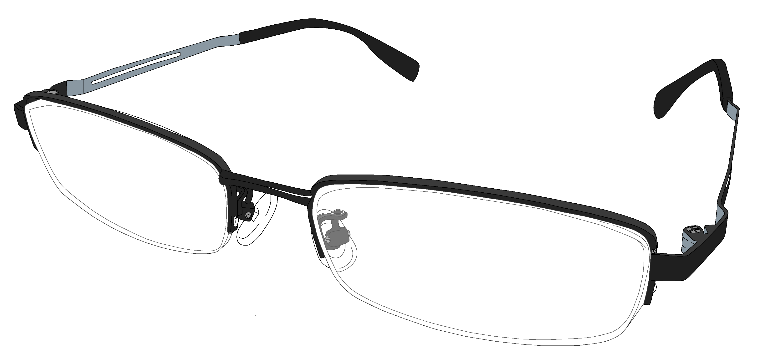

プロフィール

僕の名前は、嘉手川 航太朗（かでかわ こうたろう）と申します。
日本電子専門学校のwebデザイン科に通っています。
楽しいことや面白いことに目がなく、さまざまなことをしてきました。
漫画やイラストを描いたり、小説を書いて大賞へ応募したり、ゲームを作ってコミックマーケットへ参加したり……
志望職種はフロントエンジニア、またはバックエンドエンジニアです。
今までの経験を生かして、デザイナーの考えたデザインの良さを100%見る人に伝えることのできるよう人になりたいです。
スキル
持っている資格
・数学検定3級
ちょっと自信があること
・HTML
・ティラノスクリプト
人並にできること
・CSS
・SCSS
・Vue.js
・jquery.js
・イラスト
・ドット絵
・Live2D
少しできること
・C、C+
・3Dモデルのモデリング
・動画編集
・Unity
今後できるようになる予定
・PHP
・JavaScript
・Python
今まで作ってきたwebサイト
Copyright © Kadekawa Koutarou